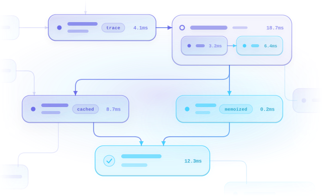

Execution Engine
TypeScript library · zero dependencies
Execution Engine
Trace and optimize your function calls,
See your whole code run as a graph.
Captured without touching the functions themselves.
$
npm i execution-engine

MIT · © 2023–2026 Akram TABKA